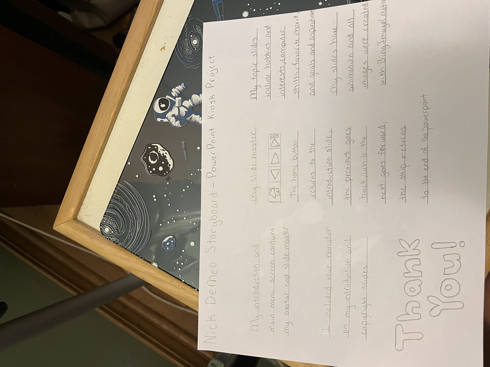

Storyboarding in Action
Here are some examples of projects where I applied storyboarding to plan and organize the work flow.
PowerPoint Presentation

This is an example of a PowerPoint presentation storyboard I created for a powerpoint kiosk, which helped visualize the project.
Storyboard Example
This is a storyboard example I created for a project. It helped visualize the key scenes and flow of the narrative.